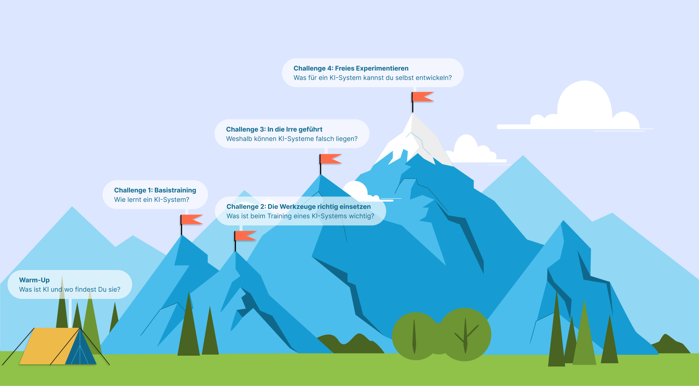
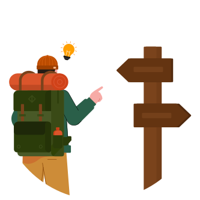
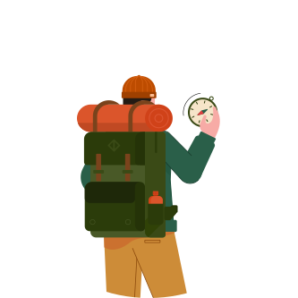

Gut gemacht!
Du hast deinen ersten KI-Gipfel erklommen.
Deine gewonnenen Abzeichen und erworbenen Kompetenzen

KI-Einsteiger:in
Verständnis der KI-Lernprozesse
Du hast verstanden, wie KI-Systeme, die Bilderkennung nutzen, lernen - du weißt, was Begriffe wie Trainingsdaten, Labels, Algorithmen und Vorhersagegenauigkeit bedeuten.
KI-Grundlagen verstehen
Du verstehst jetzt die Grundlagen von KI-Systemen, die Bilderkennung nutzen.
Erkennen von KI im Alltag
Du kannst erkennen, wo KI in verschiedenen Bereichen wie Spielen, sozialen Medien und mehr auftaucht.

KI-Scout
Feinabstimmung der Trainingsdaten
Du weißt, wie wichtig eine hohe Qualität und Vielfalt der Trainingsdaten für ein funktionierendes KI-System ist.
Zuverlässigkeitsbewer-tung in KI-Systemen
Du kannst die Zuverlässigkeit von KI-Systemen beurteilen. Du verstehst, was KI-Systeme vertrauenswürdig macht - von guten Daten bis zum Verständnis ihrer Grenzen.
KI-Detektiv:in
Testen der Grenzen von KI-Systemen
Du verstehst die Grenzen eines KI-Systems und wie abhängig es vom menschlichen Input ist.
Ein Auge für die Details
Du hast entdeckt, wie kleine Änderungen einen großen Einfluss auf die Ergebnisse eines KI-Systems haben können. Du verstehst, wie wichtig es ist, beim Training und Testen eines KI-Systems präzise zu sein.
KI-Macher:in
Ethisches Bewusstsein in der KI-Entwicklung
Du kennst die guten, die schlechten und die heiklen ethischen Aspekte bei der Entwicklung und Nutzung von KI-Systeme.
Innovative KI-Ideenfindung
Du kannst kreative, unkonventionelle Ideen entwickeln, um KI auf verblüffende, neue Weise und auf verantwortungsvolle Weise zu nutzen.
KI-Wächter:in
Erkennen von Deepfakes im Alltag
Du kennst Anhaltspunkte, anhand derer Du Deepfakes im Alltag besser erkennen kannst.
Bewusstsein für Deepfake Risiken
Du hast ein Verständnis für die Risiken, welche von Deepfakes ausgehen können, und kennst Gegenmaßnahmen, wie man diese Risiken minimieren könnte.
Deepfake-Erkennungstools verstehen
Du verstehst, welche Fähigkeiten und Einschränkungen Deepfake-Erkennungstools bei der Identifizierung von Deepfakes in verschiedenen Kontexten aufweisen. Dazu gehört u.a., dass die Tools manche Manipulationen übersehen, oder falsch identifizieren.
KI-Master:in
[Design] Entwicklung von Deepfake-Erkennung
Du kannst die Herausforderungen bei der Entwicklung von Deepfake-Erkennungswerkzeugen verstehen und dein eigenes Werkzeug prototypisch konzipieren.)
[Entwickler] KI-Erklärung für alle
Du hast gelernt, anderen Leuten KI zu erklären, und das in verschiedenen Multimedia-Formaten, wie zum Beispiel einem Video.
Wie hat Dir die KI-Wanderung gefallen?

Oder scanne den QR-Code mit Deinem Mobiltelefon, um den Fragebogen aufzurufen. ➡️